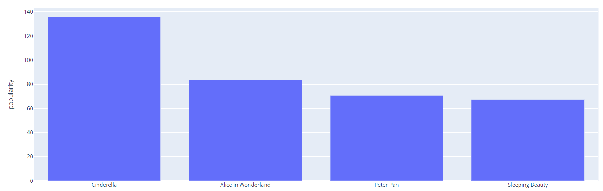

Representación
femenina en el cine
Por Jorge Llanos Rojas y Milena Ortiz Torres
Haz clic en los siguientes botones para explorar secciones
RESUMEN INTRODUCCIÓN POPULARIDAD CINEMATOGRÁFICA EXPLORANDO EL ÉXITO REVELANDO LA ESENCIA CONCLUSIONES BIBLIOGRAFÍAEntrega Final de visualización de datos
Maestría en Humanidades Digitales, Universidad de
los Andes
06 de Diciembre de 2023
.jpg)
Resumen
Este trabajo analiza la representación femenina en el cine, destacando el Test de Bechdel como una herramienta para evaluar la presencia activa de personajes femeninos. Este test, creado por Alison Bechdel, establece tres premisas que una película debe cumplir para superarlo. A través de visualizaciones de datos, se revela que muchas películas nominadas y ganadoras en los Oscar no pasan este test, evidenciando un patrón persistente en la industria cinematográfica, especialmente en el cine estadounidense. El trabajo no pretende adoptar una perspectiva feminista, sino utilizar el test de Bechdel como una rúbrica breve pero reveladora para analizar la representación de las mujeres en el cine.
Palabras clave: Representación femenina, Test de Bechdel, Industria cinematográfica, Visualizaciones de datos, Cine estadounidense.
Todos buscamos ocupar un sitio, convertirnos en una presencia significativa, ser una señal más o menos compleja o ambigua, pero en todo caso visible.
-Alberto Vital

Abstract
This work analyzes female representation in cinema, highlighting the Bechdel Test as a tool to assess the active presence of female characters. Created by Alison Bechdel, this test establishes three premises that a film must meet to pass. Through data visualizations, it is revealed that many Oscar-nominated and winning films fail this test, indicating a persistent pattern in the film industry, especially in American cinema. The study does not aim to adopt a feminist perspective but rather employs the Bechdel Test as a brief yet revealing rubric to analyze the representation of women in cinema.
Keywords: Female representation, Bechdel Test, Film industry, Data visualizations, American cinema.
Introducción
Alison Bechdel, una historietista estadounidense, llegó a este test a través de su trabajo como artista y múltiples conversaciones con su amiga Liz Wallace. Al notar la poca representación femenina dentro de los productos audiovisuales —en este caso el cine—, y los roles establecidos a los personajes otorgados, Bechdel delimitó tres reglas básicas para evaluar las películas y determinar qué tanto había allí de sesgo, qué tanto era intencional y cuáles eran los patrones de representación obtenidos.
Para muestra de ello existen hondos y amplios estudios. Un dato curioso es el siguiente: según los datos recopilados por elDiario.es (26 de febrero de 2016), a esa fecha “De las 108 nominadas a Mejor Película en los Oscar durante el siglo XXI (2000-2016), el 45% no pasan este sencillo test. La regla se extiende también a las ganadoras, 7 de las últimas 16 vencedoras del galardón a la cinta del año no superan el examen” (párr. 2). De esta forma, se hace visible un patrón que se ha repetido constantemente en la historia del cine, tomando gran relevancia el cine norteamericano.
El presente trabajo de visualización no busca evidenciar ni conceptualizar una línea de visión feminista ni hacer un análisis respecto a la representación de la mujer en el cine, los roles que usualmente suele caracterizar o su incidencia —y la de sus acciones— dentro de la historia. Nuestro objetivo es utilizar la herramienta del test de Bechdel para dar cuenta que, a partir de una rúbrica tan corta, tres preguntas, se pueden denotar resultados amplios. Si bien el test puede quedar corto en materia discursiva, argumentalmente es muy diciente, ya que evalúa una situación que parece estar normalizada a lo largo del proceso de realizar una película, que implica —más allá de la historia—, un montaje, una edición, una elección de personajes y una narrativa que se acepta como real dentro de esa ficción. Tal como lo explica la investigación de el medio de comunicación el Diario (26 de febrero de 2016):
Hay que tener en cuenta que el test de Bechdel no es la prueba definitiva sobre la presencia de las mujeres en las historias cinematográficas. De hecho, en algunas de las cintas que no pasan el test, las mujeres adoptan un papel fundamental en la trama. (...) el test de Bechdel no sirve para medir la (buena o mala) construcción de los personajes femeninos o si están edificados sobre estereotipos machistas. Sin embargo, sí que puede indicar (con más o menos precisión) la importancia del papel de las mujeres dentro de las historias. (párr. 7,8).
Esta “importancia” puede, y debe, hacerse visible para entender cómo ha sido su evolución a lo largo de varias películas importantes en la historia del cine. De igual forma, plantea un panorama para evaluar las luchas actuales de muchas mujeres y los niveles de representación que existen en la cultura popular. Tal como evidencia el epígrafe de esta sección, desde la época de Virgina Wolf ya se venía planteando, desde la mujer, esta incidencia androcéntrica en la cultura y sus posteriores efectos al momento de narrarnos como sociedad.
Popularidad Cinematográfica: Géneros más populares según el Test de Bechdel
Dentro de todas las categorías de análisis que pueden surgir de un estudio de la representación femenina en el corpus de películas utilizado en este estudio, se tiene como eje conceptual el llamado Test de Bechdel. Esta herramienta, poco conocida y de uso reciente, permite medir el porcentaje de participación activa de personajes femeninos dentro de representaciones audiovisuales, en este caso en el cine.
El test de Bechdel analiza la relevancia de los personajes femeninos en la historia para determinar si una representación artística cumple con una serie de estándares mínimos que evitarían la brecha de género. Para obtener un resultado positivo en el test debe superar tres premisas: tener más de un personaje femenino, que hablen entre sí y que lo que hablen no sea de un hombre. Se originó en 1985 en el cómic "Unas lesbianas de cuidado" de la autora Alison Bechdel. (Ferrete, 2020, p. 10).
“(...) De vez en cuando hay madres e hijas Pero casi sin excepción se describe a la mujer desde el punto de vista de su relación con hombres. Era extraño que, hasta Jane Austen, todos los personajes femeninos importantes de la literatura no sólo hubieran sido vistos exclusivamente por el otro sexo, sino desde el punto de vista de su relación con el otro sexo. Y ésta es una parte tan pequeña de la vida de una mujer”.
(Virginia Wolf, 1929, p. 60).
Según la tercera premisa del Test de Bechdel, que engloba la recopilación de las dos primeras premisas, se indica que la representación femenina implica la presencia de al menos dos mujeres que interactúan entre sí y dialogan sobre temas que no están relacionados con hombres. En este contexto, la visualización presentada refleja el porcentaje de popularidad de los géneros cinematográficos a lo largo de las décadas, enfocándose exclusivamente en las películas que cumplen con todos los requisitos para superar el Test de Bechdel con un puntaje de tres. Desde una perspectiva general, la visualización revela un aumento en la representación femenina en diversos géneros cinematográficos durante la década de 1950.
Con el objetivo de profundizar en este panorama, optamos por realizar un enfoque más detallado mediante una visualización centrada exclusivamente en los cinco géneros más populares. Es crucial señalar que la muestra utilizada en esta representación es consistente con la presentada en la Imagen 1. Según estos datos, en la década de 1950, la Animación lidera como el género más popular, alcanzando una popularidad cercana al 90%. Le sigue el género de Familia con un porcentaje de popularidad en torno al 50%. En la década de 2000, el género de Fantasía muestra una popularidad del 50%. En contraste, para el año 2010, el género de Aventura se destaca con un porcentaje de popularidad cercano al 70%, y, finalmente, en esta misma década, el género de Acción supera el 50%.
Con el objetivo de profundizar en este panorama, optamos por realizar un enfoque más detallado mediante una visualización centrada exclusivamente en los cinco géneros más populares. Es crucial señalar que la muestra utilizada en esta representación es consistente con la presentada en la Imagen 1. Según estos datos, en la década de 1950, la Animación lidera como el género más popular, alcanzando una popularidad cercana al 90%. Le sigue el género de Familia con un porcentaje de popularidad en torno al 50%. En la década de 2000, el género de Fantasía muestra una popularidad del 50%. En contraste, para el año 2010, el género de Aventura se destaca con un porcentaje de popularidad cercano al 70%, y, finalmente, en esta misma década, el género de Acción supera el 50%.
A raíz de estos resultados, nos embarcamos en la tarea de identificar las películas que mejor encapsulan esa popularidad en cada género, aprovechando una base de datos diseñada para seleccionar el top 10 de las películas más populares. Este enfoque se centró en los resultados previos en las cinco categorías de género. Los descubrimientos fueron reveladores: en el género de Animación, con una mayor popularidad en la década de 1950, la película destacada fue "La Cenicienta", alcanzando un valor significativo de 135,836. Continuando en la misma década, en el género de Familia, "Alicia en el país de las maravillas" se alzó como la película más popular, con una puntuación respetable de 83,806. En la década del 2000, dentro del género de Fantasía, "Piratas del Caribe" se posicionó como la película más destacada, acumulando un puntaje notable de 600,737. Avanzando hacia la década de 2010, en el género de Aventura, la película sobresaliente fue "Jurassic World", logrando una impresionante popularidad de 1,021,377. Finalmente, en esta misma década, el género de Acción fue representado por la película "Fantastic Beasts", que obtuvo una sólida puntuación de 374,726. Destacando aún más el impacto de estas películas, "La Cenicienta" emerge como la vencedora en el Test de Bechdel, consolidando su relevancia en la representación femenina dentro de la cinematografía.
